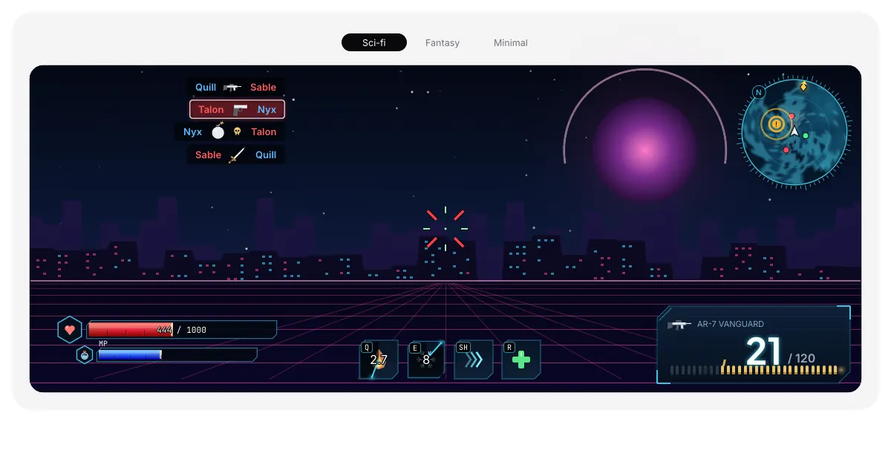
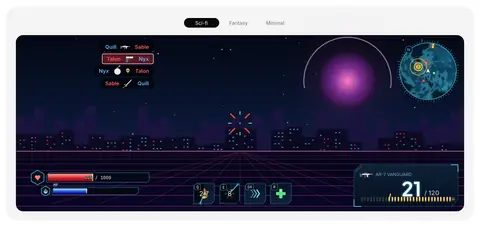
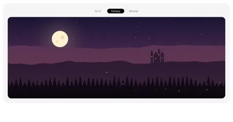
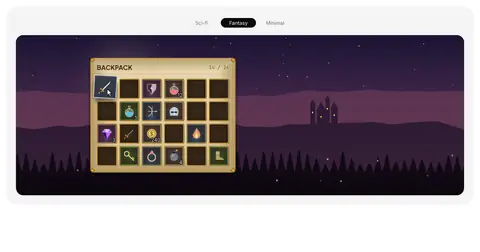
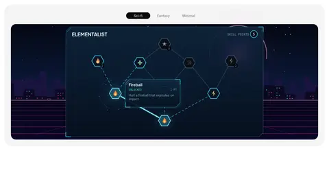
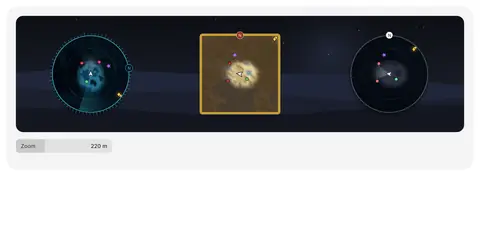
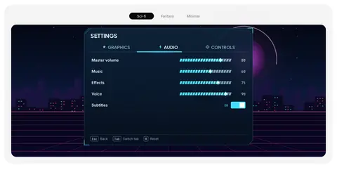
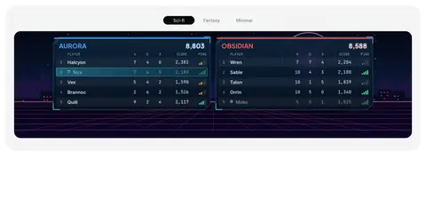

Game menus and HUDs for Rust games
glowkit's game UI blocks take plain game state every frame and handle the motion: damage trails on health bars, cooldown sweeps, letters dropping into a title screen, loot that pops and achievements that slide in. They draw into any egui Ui, so they work in Bevy through bevy_egui or in your own engine.

Why glowkit
Menus that move
Main menus over a parallax scene, pause menus, settings panels and character select screens, with staggered entries, hover slides and a sound-cue hook for every hover and confirm.
HUDs
Health, mana and stamina bars with damage trails, boss bars, ammo counters with reload states, cooldown icons, hotbars, dynamic crosshairs, kill feeds and damage numbers.
Inventory and progression
Inventories with item tooltips, skill trees, quest trackers and logs, level-up banners, loot popups and achievement toasts.
Stateless by design
Pass the numbers from your game loop each frame. glowkit keeps only animation state, so it never fights your ECS or save system.
Bevy and beyond
Use it with bevy_egui (pick a release built on egui 0.37), with eframe, or with any egui integration in your own renderer.
Styles
Sci-fi and fantasy styles, plus theme tokens for your own palette, radius and glow.
Best components

Game HUD
Game UIA full shooter / RPG HUD over a live scene: health and mana with damage trails, ability cooldowns, ammo, minimap, kill feed and a dynamic crosshair, all driven by simulated gameplay.

Main Menu
Game UIA title screen over a parallax scene: the title drops in letter by letter and breathes with a glow, entries stagger in and slide on hover, and every hover / confirm is reported as a sound cue.

Pause Menu
Game UIA pause overlay: the running scene slows to a stop and dims into a vignette while the panel springs in with play info and staggered menu entries.

Inventory Grid
Game UIDrag-and-drop inventory: items glow by rarity (legendaries run a light beam around their slot), lift out with a lagging tilt, swap with a springy landing, and show a tooltip card comparing stats with your equipped gear.

Skill Tree
Game UIA skill tree where unlocking sends a surge of energy down the link before the node pops, rings and sparkles alight; available links shimmer, locked ones stay faint, and hovering shows a card.

Dialogue Box
Game UIAn RPG dialogue box with a painted portrait that blinks and talks, a name plate, typewriter text with a glowing caret, and player choices that stagger in when the line finishes.

Minimap
Game UIRound and square minimaps with procedural terrain, fog of war that clears along the explored trail, a player arrow with view cone, pulsing enemies, rippling pings and objectives pinned to the rim.

Loot Popup
Game UIA loot reveal: an orb in the rarity color charges and trembles, then bursts into a flash, shock rings, particles and god rays as the item card springs out with its stats.

Achievement Toast
Game UIAchievement toasts that drop in on a spring, pop their badge with a ring and sparks, sweep a sheen across the card and count down before sliding away.

Settings Panel
Game UITabbed game settings for graphics, audio and controls: segmented sliders, springy toggles, arrow selectors and key rebind rows that capture the next key you press.

Character Select
Game UIA hero select carousel: cards ride a spring along an arc with the chosen one tall and glowing, the scene tints to the hero's color, stat bars refill and the confirm button breathes.

Scoreboard
Game UIA two-team scoreboard: rows stagger in, re-sort with springy moves as scores change (the new score pops), the local player glows, dead players dim with a skull and ping shows as signal bars.
A HUD from plain game state
Every block takes your values each frame. Here is the HUD from the demo above, and a main menu that reports sound cues.
cargo add glowkit eframeuse glowkit::prelude::*;
use glowkit::interactions::{
GameResourceBar,
GameResourceKind,
GameCooldownIcon,
GameIcon,
GameAmmoCounter,
GameMinimap,
GameKillFeed,
GameCrosshair,
GameCrosshairShape,
};
// every block takes plain game state each frame
ui.add(GameResourceBar::new(hp, 1000.0).kind(GameResourceKind::Health));
ui.add(GameCooldownIcon::new(GameIcon::Fire, cd, 6.0).key("Q"));
ui.add(GameAmmoCounter::new(mag, 30, reserve).reloading(reload));
ui.add(GameMinimap::new(player, heading).markers(&markers));
ui.add(GameKillFeed::new(&kills));
ui.add(GameCrosshair::new(GameCrosshairShape::Cross).spread(spread));
use glowkit::interactions::{GameMainMenu, GameStyle, GameCue};
let mut cues = Vec::new();
ui.add(GameMainMenu::new(&mut sel, &["Continue", "New Game", "Settings", "Credits", "Quit"])
.title("Astral Drift")
.subtitle("Chapter III · The Sunken Vault")
.style(GameStyle::SciFi)
.activated(&mut chosen)
.cues(&mut cues));
for cue in cues { audio.play(cue); }Keep exploring
Make your Rust app glow
Open source, MIT or Apache-2.0. One cargo add away.